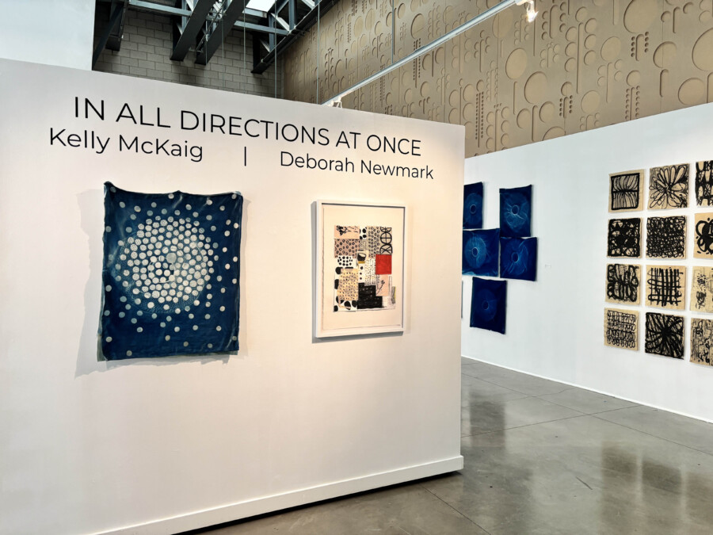

Artist Talk: All Directions At Once, Kelly McKaig and Deborah Newmark
In All Directions At Once brings together the work of mixed media artists Kelly McKaig and Deborah Newmark. Both artists create abstract, intuitive work using salvaged, handmade, and natural materials. Their practices embrace process, play, and experimentation, resulting in work that feels deeply personal while remaining open and universal—inviting viewers to find their own meanings and connections.